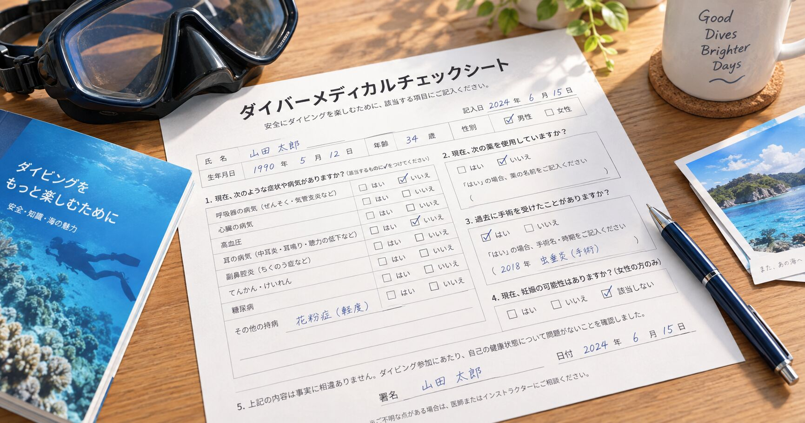
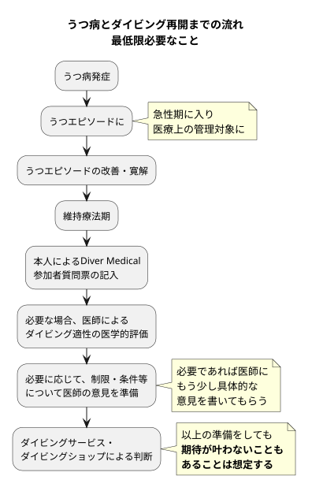

The road Orz passed by 2026 年 09 月
09 月 16 日 ( 水 )

Dive #216
障がい者ダイビングと医学的評価と受け入れ側の判断
〜うつ病からスクーバダイビング再開までを例に〜
※画像はダイバーメディカル質問票をイメージしたものであり、実際の様式とは異なります。
【本文】
条件を整えれば、障がいや持病があってもダイビングができる人はいらっしゃいます。
これは机上の話としてだけではなく、実際に海辺の店でいろいろなダイバーに会ってきて思うことでもあります。
例えば、うつ病の人。

うつ病を発症し、うつエピソードの急性期にあるときは、当然ながら治療と医学的な管理が優先されます。
その後、治療によって症状が改善し、寛解あるいは安定した状態となることがあります。そして症状が落ち着いた後も、再発予防などを目的として維持療法が続く場合もあります。
つまり、日常生活にほぼ戻っていても、治療や服薬そのものは継続している、という状態はあり得ます。
そうした段階になって、医師に相談してみたときに、医学的にはダイビングを検討できる、という判断が出てくることがあります。
ここで大切なのは、
「うつ病だから潜れない」でもなければ、「症状がなくなったから潜ってよい」でもない
ということだと思います。
ダイビングという環境を前提として、現在の状態を評価してもらう必要があります。
現在使われているDiver Medicalの仕組みも、問診で一定の条件に該当した場合には医師による評価へ進む構造になっています。現在の国際的なDiver Medical Screening Systemは、参加者質問票、医師評価フォーム、医師向けガイダンスの三つから構成されています。([UHMSメール][1])
DANも精神疾患について、単に診断名だけで判断するのではなく、症状の状態、安定している期間、判断能力、使用薬剤とその副作用などを含め、個別に評価すべきものとしています。
うつ病についても、治療によって長期間安定している人が医学的評価の結果としてダイビング可能と判断される場合がある一方、活動性の症状がある状態では潜水を避ける必要があります。([Divers Alert Network][2])
そこで、例えばDiver Medicalの参加者質問票を持ってショップに相談するとします。
それだけでは、受け入れてもらえないこともあります。
それではと診断書を追加して持っていっても、やはり判断できないと言われる場合があります。
ショップ側からすると、
「うつ病です」
「現在は安定しています」
「ダイビング可能です」
という情報だけでは、その人を実際の海で受け入れられるのか判断するための情報が足りないことがあるからということになります。
ぼくは、そういう場合には、必要であれば医師にもう少し具体的な意見を書いてもらうことを勧めています。
現在どの程度安定しているのか。
ダイビングを行う上で避けるべき条件があるのか。
現在使用している薬について、眠気、判断力、運動機能など、ダイビング上問題となり得る副作用がないか。
特別な制限が必要なのか。
それとも医学的には特別な制限を設定する必要がないのか。
そうしたことまで含めて、できるだけ具体的に医学的な判断材料を用意してもらいます。
ただし、これはダイビングするために本人の個人的判断で服薬を減らしたり、中断したり、潜る日だけ変更したりするという意味ではありません。
薬の変更が必要なのか、そもそも変更してよいのかを判断するのは処方している医師です。
DANも、精神疾患そのものだけでなく、その治療薬による副作用や水中での判断能力への影響を考慮する必要があるとしています。
一方で、精神科薬の高圧環境下での影響について十分な研究があるわけではないことにも注意が必要になります。([Divers Alert Network][2])
そうした医学的情報をそろえたうえで、ショップに相談する。
そこから先は、ショップやダイビングサービス側の判断になります。
ここは医師の判断とは別のものです。
医師が評価するのは、医学的な観点からダイビングを行える状態なのか、必要な制限や条件があるのかということ。
ショップ側が判断するのは、
「この人を、今のスタッフ、このポイント、この海況、このダイビング形態で安全に受け入れることができるか」
ということになります。
だから、医師から医学的に問題ないという評価が出ていても、必ず希望したショップで受け入れてもらえるとは限りません。
ぼく自身、ショップ側にもいたことがあります。
提出された情報で十分に判断できると思えば受け入れ可能ですし、判断できなければ、その時点では断ることもありました。
ただし、
「病気があるから駄目です」
で終わるのではなく、
「今の情報だけでは判断できないので、この点について医師の意見をもらってください」
とお願いすることも当然お話させていただいていました。
そして必要な情報をそろえて持ってきてもらった段階で、ようやくご本人と実際のダイビングについて相談できるようになります。
例えば、どのようなポイントならよいのか。
ボートなのかビーチなのか。
どの程度の海況なら対応できるのか。
どのようなサポートが必要なのか。
本人に何ができて、何が難しいのか。
受け入れ側に、そのサポートを行える人員や経験があるのか。
そういうことを一つずつ確認していく。
受け入れ側にも当然、知識や経験の限界があります。
判断するための情報が少なすぎれば、
「安全だとも危険だとも判断できない」
という状態になります。
その状態ではやはり水中へお連れするわけにはいかない。
だから、結果として断らざるを得ない場合があります。
逆にいえば、診断名だけで「できる」「できない」を決めるのではなく、判断可能なだけの情報を集め、どういう条件なら成立するのかを一緒に考えることはできます。
ぼく自身、協調運動障害を抱えた状態でスクーバダイビングを再開するにあたって、同じことをかなり細かく考えました。
ボートダイビングについては、
協調運動障害とスクーバダイビング 〜ボートダイビング実施のケーススタディ〜 [4]
にまとめています。
ビーチダイビングについても、
協調運動障害とスクーバダイビング 〜ビーチダイビング編〜 [5]
として整理中です。
ここで考えているのも、
「障がいがあっても大丈夫」
という単純な話ではありません。
何が危険なのか。
どこで破綻する可能性があるのか。
何を変えれば成立するのか。
それを一つずつ考えています。
例えば、水中そのものよりエントリーやエグジットの方が危険なのであれば、そこに対策と資源を集中する。
ボートでは成立するがビーチでは難しい人もいるかもしれない。
逆に、ボート上での移動が難しいためビーチの方が成立する人もいるかもしれない。
同じ診断名であっても、成立条件は一人ひとり違います。
だから「障がい者ダイビング」というひと括りだけで考えるのは非常に難しい。
準備は面倒だと思います。
それでも、何らかの疾患や障がいを抱えながらダイビングをするのであれば、自分自身のリスクだけではなく、バディやスタッフがどこまで対応できるのかも考えなければなりません。
当たり前ですけれど、スクーバダイビングは機材がなければその場で呼吸できない水中で行うアクティビティです。
何か起こったとき、
「ではここで一度休みましょう」
というだけでは済まないことがあります。
呼吸できる環境である水面まで戻らなければなりません。
事故になれば、本人だけではなく、バディやスタッフにも救助上の危険や大きな負担が生じます。
だからこそ、事前の準備が必要になってきます。
ぼく自身がダイビングへの本格的な再始動を考えている過程については、Web 絵日記にも残しています。
ただし、どれだけ準備しても、
医学的にはダイビング可能である
ということと、
そのショップ、その海、その日の条件で実際にダイビングを実施できる
ということはイコールにはなりません。
条件を整えても、希望した形では潜れないことがある。
ショップから断られることもある。
最終的に、
今回は潜らない
という結論になることもある。
そこまで含めて最初から考えておく必要があると思います。
それでもぼくは、病名や障がいがあるという事実だけを理由に、最初からすべての可能性を閉じる必要はないと思っています。
何ができるのか。
何ができないのか。
何を補えばできるのか。
どの条件までなら安全に成立するのか。
それを本人、医療側、受け入れ側で考える。
そして、成立しないのであればやらない。
ダイバーには、海で自分が「もしも」にならない責任があります。
【参考資料】
- Diver Medical Screening System（DMSC / UHMS）。2026年現在の参加者質問票・医師評価フォームは2026年1月版で、問診、医師評価、医師向けガイダンスから構成されています。([UHMSメール][1])
- DAN「Psychiatric Conditions and Diving」。精神疾患とダイビングについて、診断名のみではなく症状、安定期間、服薬、判断能力などを個別評価する考え方が示されています。([Divers Alert Network][2])
- DAN「Psychiatric Fitness to Dive」。寛解して治療が安定している場合の評価、薬剤、副作用などについて論じられています。([Divers Alert Network][3])
【関連ページ】
- 協調運動障害とスクーバダイビング 〜ボートダイビング実施のケーススタディ〜 ([OrzBruford][4])
- 協調運動障害とスクーバダイビング 〜ビーチダイビング編〜 ([OrzBruford][5])
- 絵日記 2026/09/06「まだ諦めてない」 ([OrzBruford][6])
- 絵日記 2026/09/07「協調運動障害とスクーバダイビング 〜ビーチダイブ実施の可能性と実現に向けて〜」 ([OrzBruford][7])
【文献】
- [1]: "Recreational Diving Medical Screening System - Undersea & Hyperbaric Medical Society : 2026" - https://mail.uhms.org/resources/featured-resources/recreational-diving-medical-screening-system.html
- [2]: "Psychiatric Conditions and Diving - Divers Alert Network : 2020" - https://dan.org/health-medicine/health-resources/diseases-conditions/psychiatric-conditions-and-diving/
- [3]: "Psychiatric Fitness to Dive - Divers Alert Network 2011" - https://dan.org/alert-diver/article/psychiatric-fitness-to-dive/
- [4]: "協調運動障害とスクーバダイビング 〜ボートダイビング実施のケーススタディ〜" - https://mitsugu.github.io/disability-diving/
- [5]: "協調運動障害とスクーバダイビング 〜ビーチダイビング編〜" - https://mitsugu.github.io/disability-diving/beachdive.html
- [6]: "絵日記 2026/09/06「まだ諦めてない」" - https://orzbruford.jp/202609/06.html
- [7]: "絵日記 2026/09/07「協調運動障害とスクーバダイビング 〜ビーチダイブ実施の可能性と実現に向けて〜」" - https://orzbruford.jp/202609/07.html
- Category :
- #Records of Orz's Road
- #ダイビング
- #スクーバダイビング
- #障がいと疾患とダイビング
- #障害と疾患とダイビング
- #障害者ダイビング